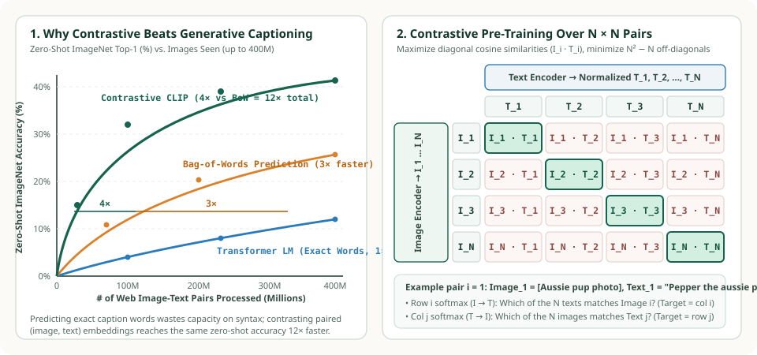
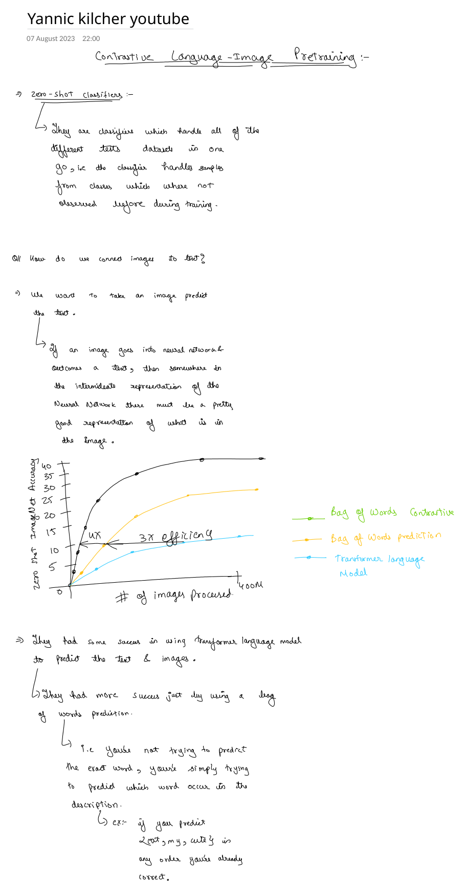
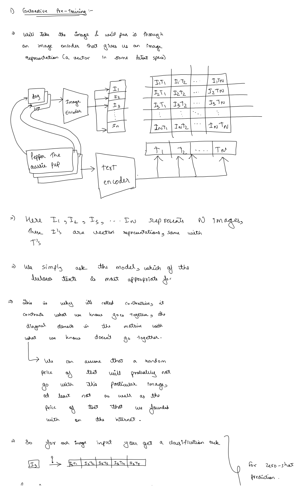

1. Why Contrastive Beats Captioning: Data Efficiency ($3\times \to 12\times$), WIT-400M & The $N \times N$ Alignment Matrix
How do you build a vision model that can classify samples from classes it has never observed during training across dozens of distinct test benchmarks in a single forward pass? Our first set of study notes (adapted from Yannic Kilcher's walkthrough of Radford et al., 2021) traces the core engineering discovery that made CLIP possible: why predicting exact image captions word-by-word with a Transformer language model is prohibitively slow, why relaxing the target to an unordered Bag of Words yields a $3\times$ speedup, and why switching from generation to contrastive pre-training over an $N \times N$ similarity matrix yields an additional $4\times$ leap ($12\times$ total data efficiency).


1. What Does "Zero-Shot" Really Mean in Vision?
In classical supervised vision (such as ResNet-50 trained on ImageNet-1K), the final layer is a fixed linear projection $\mathbf{W} \in \mathbb{R}^{d \times 1000}$ where row $k$ represents an opaque integer index $k \in \{0, \dots, 999\}$. If you evaluate that model on Stanford Cars ($196$ fine-grained make/model classes), Food-101, or EuroSAT satellite imagery, the $1{,}000$-way head is useless—you must discard it, freeze or fine-tune the backbone on labeled training images from the new dataset, and learn a new matrix $\mathbf{W}_{\text{new}}$.
As summarized in our study notes below, a zero-shot classifier handles all of those different test datasets in one go—predicting classes that were not explicitly carved out as fixed output neurons during training—by connecting images directly to natural language descriptions:


2. The $12\times$ Data-Efficiency Discovery: Why Captioning Loses to Contrastive
Suppose we collect $400\text{ million}$ $(I, T)$ pairs from the internet (OpenAI's WIT — WebImageText corpus, built from 500,000 search queries so every Wikipedia concept appears at least 20,000 times). How should we train a neural network to connect image $I$ to text $T$?
Intuitively, if an image goes into a neural network and out comes a text caption (as in VirTex, Sariyildiz et al., 2020), then somewhere in the intermediate representation of the neural network there must be a strong representation of what is inside the image. However, when OpenAI scaled this idea up, they observed dramatic differences in sample efficiency across three training objectives:
-
Objective 1 — Autoregressive Transformer Language Model ($1\times$ baseline):
Given image features $f_\theta(I)$, train a causal Transformer decoder to predict the exact caption word-by-word:
$$\mathcal{L}_{\text{LM}}(I, T) = -\sum_{t=1}^{|T|} \ln P_\psi(w_t \mid w_{<t}, f_\theta(I)).$$Why is it so slow? Because real web alt-text is noisy and idiosyncratic (e.g.,
"IMG_4821.JPG — Pepper the aussie pup at sunset, Canon EOS 5D f/2.8!"). Forcing the vision backbone to help predict exact punctuation, word order, camera metadata, and stop-words wastes gradient capacity on details that have nothing to do with visual recognition. -
Objective 2 — Bag-of-Words (BoW) Multilabel Prediction ($3\times$ more efficient):
Discard word order and syntax altogether. Treat the caption as an unordered set of unique vocabulary tokens $\mathcal{B}(T) \subset \{1, \dots, V\}$. As noted in the handwritten example above: if the caption is "my cute cat" and the model predicts
{cat, my, cute}in any order, it is already $100\%$ correct! Stripping out syntactic ordering immediately accelerates zero-shot ImageNet learning by $3\times$. - Objective 3 — Contrastive Pre-Training / CLIP ($4\times$ faster than BoW, $12\times$ faster overall): Even Bag-of-Words prediction still asks the image encoder to predict every possible word in a $49{,}152$-token vocabulary for a single image, when a photo of a dog in a park could be validly described by thousands of different sentences. Switching from generative/predictive modeling ($P(T \mid I)$ over all strings) to discriminative/contrastive matching ("which of the $N$ texts in this batch actually accompanied image $I_i$?") produces another $4\times$ speedup—making CLIP $12\times$ more compute-efficient than autoregressive captioning!
3. How Contrastive Pre-Training Works: The $N \times N$ Alignment Grid
In our second handwritten note panel below, we trace how a single training step processes a minibatch of $N$ image–text pairs $\{(I_1, T_1), (I_2, T_2), \dots, (I_N, T_N)\}$ (for example, $I_1 = \text{photo of a dog}$ paired with $T_1 = \text{“Pepper the aussie pup”}$):


Let us walk through the exact mechanics illustrated in the diagram:
- Independent Dual Encoders: Each image $k \in \{1, \dots, N\}$ passes through the Image Encoder to produce a normalized $d_e$-dimensional vector $\mathbf{I}_k \in \mathbb{S}^{d_e-1}$. Simultaneously, each text caption $k \in \{1, \dots, N\}$ passes through the Text Encoder to produce a normalized $d_e$-dimensional vector $\mathbf{T}_k \in \mathbb{S}^{d_e-1}$.
- All-Pairs Cosine Matrix ($N^2$ inner products from $2N$ encoder calls): Because the two towers only interact via a dot product at the very top, we only run $N$ image forward passes and $N$ text forward passes, yet a single matrix multiplication $\mathbf{I}\mathbf{T}^\top$ evaluates all $N^2$ pairwise similarities:
$$\mathbf{S} = \mathbf{I}\mathbf{T}^\top = \begin{bmatrix} \mathbf{I}_1 \cdot \mathbf{T}_1 & \mathbf{I}_1 \cdot \mathbf{T}_2 & \dots & \mathbf{I}_1 \cdot \mathbf{T}_N \\ \mathbf{I}_2 \cdot \mathbf{T}_1 & \mathbf{I}_2 \cdot \mathbf{T}_2 & \dots & \mathbf{I}_2 \cdot \mathbf{T}_N \\ \vdots & \vdots & \ddots & \vdots \\ \mathbf{I}_N \cdot \mathbf{T}_1 & \mathbf{I}_N \cdot \mathbf{T}_2 & \dots & \mathbf{I}_N \cdot \mathbf{T}_N \end{bmatrix} \in [-1, 1]^{N \times N}.$$
- Why Is It Called Contrastive? Because it explicitly contrasts the $N$ known positive pairs on the main diagonal $\{(\mathbf{I}_i, \mathbf{T}_i)\}_{i=1}^N$ (which were found together on the internet) against the $N^2 - N = N(N-1)$ off-diagonal pairs $\{(\mathbf{I}_i, \mathbf{T}_j)\}_{i \neq j}$. A random caption $T_j$ from elsewhere on the internet is overwhelmingly unlikely to describe image $I_i$ as accurately as its true paired caption $T_i$.
- $2N$ Simultaneous $N$-Way Classification Tasks:
- For each image row $i$, row-wise softmax asks: "Out of all $N$ captions $[T_1, \dots, T_N]$ in this batch, which one belongs to image $I_i$?" ($I_3 \xrightarrow{?} [I_3 T_1 \mid I_3 T_2 \mid \mathbf{I_3 T_3} \mid \dots \mid I_3 T_N]$).
- For each text column $j$, column-wise softmax asks: "Out of all $N$ images $[I_1, \dots, I_N]$ in this batch, which one belongs to caption $T_j$?" ($T_3 \xrightarrow{?} [I_1 T_3 \mid I_2 T_3 \mid \mathbf{I_3 T_3} \mid \dots \mid I_N T_3]$).
4. Why Contrastive Learning Demands Massive Mini-Batches ($N = 32{,}768$)
Notice the crucial note on Page 2 of our handwritten sheets: "This requires larger mini-batches." Why does CLIP train with a global batch size of $N = 32{,}768$ across hundreds of GPUs instead of $N = 64$ or $N = 256$?
In in-batch contrastive learning, the other $N - 1$ items in the minibatch are the negative distractors!
- When $N = 32$, each image is only contrasted against $31$ random captions. All $31$ negatives are likely completely unrelated topics (e.g., cars, recipes, architecture), so the model achieves near-zero loss just by learning coarse super-categories ("animal" vs. "vehicle").
- When $N = 32{,}768$, every minibatch contains $32{,}767$ negative captions per image—producing $32{,}768^2 - 32{,}768 \approx \mathbf{1.0737 \times 10^9}$ ($>1\text{ billion}$) negative pairs per gradient step! Among $32{,}767$ captions, an Australian Shepherd photo (
"Pepper the aussie pup") will routinely encounter dozens of other dog breeds, wolves, and outdoor pets inside the same batch, forcing the encoders to learn fine-grained visual attributes, textures, and text tokens.
| Minibatch Size $N$ | Encoder Forward Passes ($2N$) | Positive Diagonal Pairs ($N$) | Off-Diagonal Negative Pairs ($N^2 - N$) | Negatives per Positive ($N - 1$) |
|---|---|---|---|---|
| $N = 32$ (Toy batch) | $64$ | $32$ | $992$ | $31 : 1$ (Coarse topic matching only) |
| $N = 256$ (Single GPU) | $512$ | $256$ | $65{,}280$ | $255 : 1$ |
| $N = 4{,}096$ (Multi-node) | $8{,}192$ | $4{,}096$ | $16{,}773{,}120$ | $4{,}095 : 1$ |
| $N = 32{,}768$ (OpenAI CLIP) | $65{,}536$ | $32{,}768$ | $1{,}073{,}709{,}056$ ($\approx 1.07\text{B}$) | $32{,}767 : 1$ (Fine-grained semantics) |
5. Python Simulation: $N \times N$ Contrastive Matrix & Hard-Negative Pressure
Below is a runnable Python script verifying the $N \times N$ cosine similarity matrix and showing how in-batch negative count $N - 1$ sharpens the gradient signal on the ground-truth diagonal:
import math
def matmul_nt(I_e: list[list[float]], T_e: list[list[float]]) -> list[list[float]]:
"""Compute N x N cosine similarity matrix I_e @ T_e.T."""
return [[sum(a * b for a, b in zip(row_i, row_t)) for row_t in T_e] for row_i in I_e]
def l2_norm(v: list[float]) -> list[float]:
s = math.sqrt(sum(x * x for x in v))
return [x / s for x in v]
# 3 aligned (Image, Text) pairs in a 3D toy embedding space:
# Pair 0: Aussie pup ("Pepper the aussie pup")
# Pair 1: Tabby cat ("my cute cat")
# Pair 2: Sports car ("red convertible on highway")
I_e = [
l2_norm([0.92, 0.25, -0.10]),
l2_norm([0.20, 0.95, -0.05]),
l2_norm([-0.15, -0.10, 0.98]),
]
T_e = [
l2_norm([0.90, 0.28, -0.08]),
l2_norm([0.24, 0.93, -0.04]),
l2_norm([-0.12, -0.08, 0.99]),
]
S = matmul_nt(I_e, T_e)
for i, row in enumerate(S):
formatted = ", ".join(f"{val:+.3f}" for val in row)
print(f"Row I_{i}: [{formatted}] (diagonal I_{i}·T_{i} = {row[i]:+.3f})")
# Verify every diagonal positive strictly exceeds all off-diagonal negatives
for i in range(3):
for j in range(3):
if i != j:
assert S[i][i] > S[i][j] and S[i][i] > S[j][i]
print("Verified: All N diagonal pairs beat all N^2 - N off-diagonal pairs!")